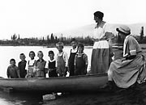
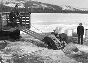
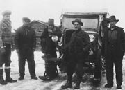
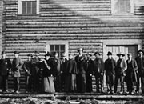
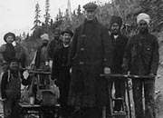

The new century brought many opportunities. First Nations people adapted their traditional skills to the new market economy. Tlingit and Tagish people worked as guides and packers on the Chilkoot Pass, while in Dawson Han people charged newly-arrived prospectors five dollars to guide them to Bonanza Creek.
A variety of businesses and services sprang up in response to the boom; everything from travelling lunch counters to fortune-tellers and prostitutes. The transportation industry also provided jobs. Both native and non-native people cut wood for the sternwheelers; farmers grew hay for the horses on the stage line; blacksmiths worked in the stables.
Economic development brought a change in scale as well. Small, individually owned companies were bought out by large conglomerates. Small trading posts gave way to mercantile operations. William Drury went into business with Isaac Taylor in 1899; their company Taylor & Drury lasted more than 50 years. From their base in Whitehorse, they founded a network of trading posts throughout the Yukon; they even had their own coins minted in Ottawa and used them from 1912 until 1950.
Women also have had opportunities in the north that they might not have elsewhere. As well as working in traditional jobs, as cooks or teachers, they have managed hotels, worked as journalists and run for politics. They continue to do everything from flying airplanes to working as underground miners and driving buses. Pioneering First Nations entrepreneurs laid the foundations for today’s businesses and initiatives, given new impetus by land claim agreements.
“...an old miner who last winter worked....one of the richest claims on the Eldorado...did not make as much money as he would have done had he worked for wages at $15 per day.”
Annual Report of the North-West Mounted Police
1898.
Continue to Good prospectsJobs, careers and trades
(Above) Hunting guide Mr. Lokkin of Carmacks and his crew hunting mountain sheep, c.1915.
YA, Back collection, 90/19 #183
Teacher Mrs. Rhinehart’s farewell picnic, Mayo area, c.1924.
YA, Hare collection #6665
Men load ice blocks for sternwheeler, spring 1937. The blocks were stored in an icehouse layered with sawdust and would last until late summer.
YA, Tidd collection #8428
Don Murray, Frank Slim, Carl Chambers, Joe Horsfal and Finley Beaton at Minto, with an early ‘snowmobile’, 1936.
YA, Irvine collection #1902
The staff of the Dawson Daily News, 1899.
YA, Canadian Museum of Civilization collection, #657
Flo Whyard, then editor of the Yukon section of Alaska magazine, c.1970.
YA, Harrington collection, 85/25 #385
Pilot James ‘Bud’ Potter gets a haircut, Whitehorse, June 12, 1942.
YA, Finnie collection, 81/21 #39
McDonald’s section-gang near “Car-cross”, 1906. Note the four Sikh men.
YA, Scott/Phelps collection, 89/31 #186